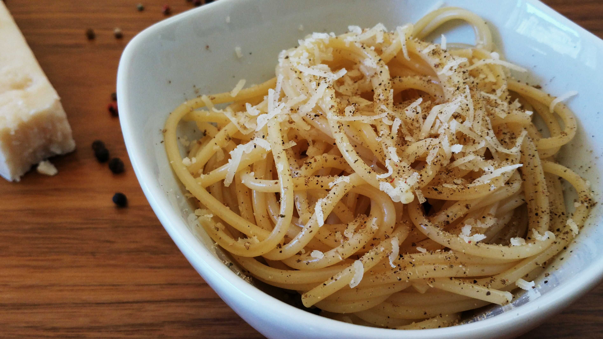

Cacio e pepe

Description
Cacio e pepe is an Italian pasta dish meaning "cheese and pepper" in several Italian dialects. It is usually a dish made of spaghetti with grated pecorino romano and black pepper.
Ingredients
- 1 pound spaghetti
- 6 tablespoons olive oil
- 2 cloves garlic, minced
- 2 teaspoons ground black pepper
- 1 3/4 cups grated Pecorino Romano cheese
Steps
- Add water to a large pot and lightly salt. Boil the water.
- Cook the spaghetti in the boiling water while stirring occasionally for about twelve minutes or until tender yet firm to the bite. Reserve 1 cup of the pasta water, then drain the spaghetti.
- Heat olive oil in a skillet over medium heat. Add garlic and black pepper. Cook and stir for 1 to 2 minutes or until fragrant.
- Add the spaghetti and the grated Pecorino Romano. Ladle in 1/2 cup of the pasta water and stir until the cheese is melted. Ladle and stir in more pasta water as need until the sauce coats the spaghetti.